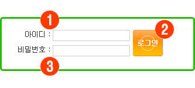
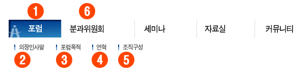
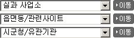

점검 방법 및 준수/위반 사례
이전
목차
다음
익스플로러 (브라우저) 화면 확인
2-4. 키보드로만 운용 가능
점검 가능 지표
키보드만으로 모든 콘텐츠를 제어할 수 있어야 한다.
점검 방법 설명
탭 키로 처음부터 끝까지 이동이 되는지, 사용에 무리가 없는지 검사
<select> 요소에 이동 버튼 (submit 기능) 제공
X 나쁜 예

O 좋은 예

O 좋은 예
